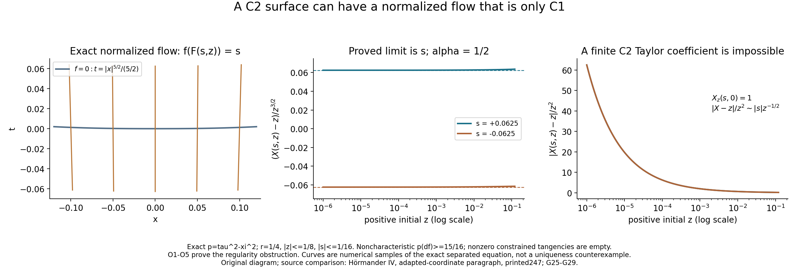
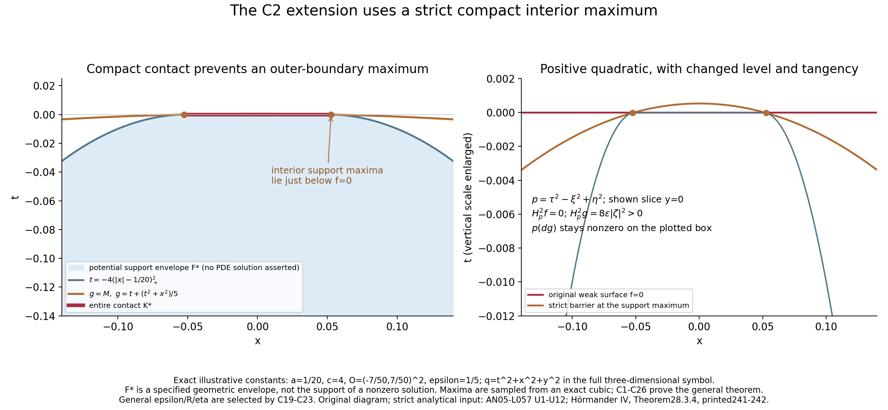

C² surfaces and compact-contact uniqueness
A surface can be twice continuously differentiable even when its normalized transverse flow is not twice differentiable. That matters for weak convexity: the smooth coordinate proof in Weak convexity, one-sided approximation, and compact contact does not automatically give an estimate through such a flow.
This lesson proves the compact-contact conclusion directly for a real C² defining function, retaining the invertible real quadratic fiber hypothesis. First write the surface as a C² graph in the original smooth coordinates. Its gradient and Hessian are independent of the normal coordinate, so the smooth symbol gives a linear bound on the normal error. A smooth approximation plus a positive quadratic then makes a compact interior support maximum strictly pseudoconvex. The strict one-sided theorem finishes the argument.
The full nearby weak test and the entire compact contact are essential hypotheses. The neighborhood for the equation is fixed before the solution; the barrier parameters may depend on that solution's compact contact. The flow example and the subtraction example explain limitations of two proof methods. Neither is a uniqueness counterexample.
1. Statement and the strict continuation theorem
Let P be a scalar second-order left differential operator on an open neighborhood X of \(z_0\), using \(D=-i\partial\) and Lebesgue distribution pairing. Its homogeneous quadratic principal symbol is
\[ p(z,\zeta)=\zeta^T G(z)\zeta,\qquad G(z)=G(z)^T\text{ real and smooth}, \qquad G(z_0)\text{ invertible}. \tag{C1} \]All lower coefficients may be complex and are locally essentially bounded. Let \(\psi\) be real C² on X, \(\psi(z_0)=0\) after subtracting a constant, with \(p(z_0,d\psi(z_0))\) nonzero. On the full nearby zero surface assume
\[ H_p^2\psi(z,\zeta)\ge0 \quad\text{if }\psi(z)=0,\quad p(z,\zeta)=H_p\psi(z,\zeta)=0, \qquad H_p=p_\zeta\cdot\partial_z-p_z\cdot\partial_\zeta. \tag{C2} \]The second Hamilton expression is defined by the original C² jet. There is a sufficiently small full neighborhood Y of \(z_0\), chosen from the symbol and \(\psi\) before the solution, such that every u in \(H^1_{\mathrm{loc}}(Y)\) with \(Pu=0\) in distributions and relative support \(F=\operatorname{supp}_Y u\) satisfying
\[ F\subset\{\psi\le0\},\qquad K=F\cap\{\psi=0\}\Subset Y \tag{C3} \]vanishes in a neighborhood of \(z_0\). The hypothesis concerns the entire K. The final vanishing neighborhood may depend on K; no vanishing throughout Y is claimed.
We use the strict one-sided theorem proved in Oriented strong pseudoconvexity and weak unique continuation, Sections11–14, (U1)–(U12). A smooth principally normal principal symbol, a real C² strongly pseudoconvex defining function with nonzero conormal, locally bounded lower coefficients and an \(H^{m-1}_{\mathrm{loc}}\) solution give local uniqueness; that theorem proves vanishing throughout its own sufficiently small fixed neighborhood. Here \(m=2\). Its proof includes lower-term absorption, the principal graph approximation and the cutoff weight gap. The new geometric reduction below keeps the operator in its original smooth coordinates.
A real smooth \(p\) is principally normal because \(\{p,\overline p\}=0\) exactly. For any real quadratic \(p\) and noncharacteristic conormal \(N\), the complex tangency constraint at \(\zeta=\xi+i\lambda N\), \(\lambda>0\), is empty:
\[ p_\zeta(z,\xi+i\lambda N)\cdot N =2\,\xi^TG(z)N+2i\lambda\,N^TG(z)N. \tag{C4} \]Its imaginary part cannot vanish. Thus, once the strict real test is proved, the second strong-pseudoconvexity test of that theorem has no constrained points. This fact is checked algebraically; it is not an assumption that strictness follows from a merely nonnegative test.
2. A C² graph in the original smooth coordinates
Translate \(z_0\) to zero and make an orthogonal linear coordinate choice \(z=(t,y)\), \(y\in\mathbb R^{n-1}\), with the t direction pointing along \(d\psi(0)\). Thus \(\psi_t(0)>0\). These are smooth constant coordinate changes. They retain smooth real principal coefficients, bounded lower coefficients, the left-operator order and local \(H^1\); the absolute Jacobian is one, and no differentiated Jacobian or coefficient term is generated.
Here is the full graph construction. Choose a box \(U_0=(-a,a)\times B'_b\) where \(\psi_t\ge a_0>0\). First select a small a for which \(\psi(-a,0)<0<\psi(a,0)\), then shrink b so these inequalities hold for all y in the box. Strict monotonicity and the intermediate value theorem give a unique \(t=h(y)\) with \(\psi(h(y),y)=0\). The inequality \(\psi_t\ge a_0\) implies continuity of h: the mean value formula bounds the difference of two graph heights by \(a_0^{-1}\) times the change of \(\psi\) at a fixed height. Difference quotients and the first-order Taylor formula then give
\[ h_j=-\frac{\psi_j}{\psi_t}\bigg|_{(h(y),y)},\qquad h_{jk}=-\frac{\psi_{jk}+\psi_{tj}h_k+\psi_{tk}h_j+\psi_{tt}h_jh_k} {\psi_t}\bigg|_{(h(y),y)}. \tag{C5} \]The first formula is continuous, hence h is C¹; differentiating it yields the continuous second formula, hence h is C². Because the coordinate direction was aligned with \(d\psi(0)\), \(h(0)=0\) and \(dh(0)=0\). Put \(f(t,y)=t-h(y)\). Its sign and zero surface are exactly those of \(\psi\) on this box.
For completeness, \(\psi=a(t,y)f\) with
\[ a(t,y)=\int_0^1\psi_t\big(h(y)+\theta(t-h(y)),y\big)\,d\theta>0. \tag{C6} \]The factor a is C¹. At a zero-surface point its second-order jet identity is \(D^2\psi=aD^2f+da\otimes df+df\otimes da\). One can obtain it either by differentiating the first derivative on the surface or by multiplying the first-order Taylor expansion of a by the second-order expansion of f. No second derivative of a is needed. Thus \(d\psi=a\,df\), the tangent constraint sets agree, and
\[ H_p^2\psi=a H_p^2f \quad\text{on }f=0,\ p=H_pf=0. \tag{C7} \]Indeed the mixed Hessian terms are twice \((p_\zeta\cdot da)(p_\zeta\cdot df)\), which vanish at tangency, and the remaining first-jet Hamilton term scales by a. Consequently f obeys the same weak test and is noncharacteristic after shrinking. The function f is used only as a defining function in the original smooth coordinates: the map (t,y) to (f,y) is not applied to P.
Choose a compact larger graph box U inside U0, containing the normal segments from all points of a later ball to their surface projections. Fix finite constants on it:
\[ \begin{gathered} \sigma>0,\quad |G(z)v|\ge\sigma|v|,\quad |G(z)|\le G_0,\quad |p(z,df(z))|\ge c_0>0,\\ |df|\le N_0,\qquad |D^2f|\le H_0 . \end{gathered} \tag{C8} \]These use compactness, continuity and invertibility; they precede the solution. Operator norms and vector lengths are the original Euclidean ones. In the one-dimensional case the graph variable is empty and \(f=t\); the argument below includes the empty constraint-set branch.
3. Uniform linear control of the fiber constraints
At the surface projection \(z^*=(h(y),y)\), let \(N(y)=df(z^*)\) and define
\[ \mathcal Q_y(\zeta)= \big(p(z^*,\zeta),\,p_\zeta(z^*,\zeta)\cdot N(y)\big). \tag{C9} \]For \(y\) in a fixed compact smaller graph disk and unit \(\zeta\), its zero set is compact. At every zero the two fiber derivative rows are \(2G(z^*)\zeta\) and \(2G(z^*)N\). They are independent. Otherwise, invertibility of \(G\) would imply that \(\zeta\) is a scalar multiple of \(N\); \(p(z^*,\zeta)=0\) and \(p(z^*,N)\ne0\) would force \(\zeta=0\), contrary to its unit length.
We prove the needed quantitative projection, rather than merely invoke a regular zero set. At each zero choose a nonsingular two-column minor A0 of the derivative of Q; call those two fiber coordinates w and the others q. In a sufficiently small product chart, continuity makes
\[ \|I-A_0^{-1}\partial_w\mathcal Q_y(w,q)\|\le1/2,\qquad \|A_0^{-1}\|\le M \tag{C10} \]for a finite chart constant M. For an approximate zero (y,w,q) sufficiently close to the chart center, freeze y,q and iterate \(w_{\mathrm{new}}=w_{\mathrm{old}}-A_0^{-1}\mathcal Q_y(w_{\mathrm{old}},q)\). If \(r=2M|\mathcal Q_y(w,q)|\), the map moves the initial center by at most \(r/2\) and is \(1/2\)-Lipschitz, hence maps the closed ball of radius \(r\) about that center into itself. Shrink the approximate-zero chart so that this ball stays inside the derivative-controlled larger chart. The iterates are Cauchy by the geometric contraction bound and converge to \(w^*\) with \(\mathcal Q_y(w^*,q)=0\). Their total displacement is at most \(r\). At residual zero no iteration is needed. The resulting \(\zeta^*\) remains in a fixed annulus, say \(1/2\le|\zeta^*|\le3/2\).
Finitely many smaller charts cover the compact exact unit zero set. Let \(S(z,\zeta)=H_p^2f(z,\zeta)\). It is a quadratic form in \(\zeta\) with continuous bounded coefficient matrix. On the annulus its fiber derivative has a uniform finite bound. Therefore the weak test at the projected exact zero and the displacement bound imply \(S(z^*,\zeta)\ge-C_{\mathrm{chart}}|\mathcal Q_y(\zeta)|\) near that zero set. Outside the union of the smaller charts the continuous residual has a positive minimum \(d_0\) if that complement is nonempty; \(S\) is bounded by \(M_0\) there, and \(S\ge-(M_0/d_0)|\mathcal Q|\). Taking the maximum of these finite constants proves
\[ S(z^*,\zeta)\ge-C_{\rm fib} \big(|p(z^*,\zeta)|+|p_\zeta(z^*,\zeta)\cdot N|\big), \qquad |\zeta|=1. \tag{C11} \]If the exact zero set is empty, only the positive-residual-minimum argument is used. If the complement is empty, only the chart bounds are used. No division by a vanishing principal symbol occurs. The parameter y needs only the stated continuous coefficient and derivative bounds; no third derivative of h enters. At a general nonzero fiber length, normalization gives the precise degree-two comparison \(S(z^*,\zeta)\ge-C_{\mathrm{fib}}(|p(z^*,\zeta)|+|\zeta|\,|H_pf(z^*,\zeta)|)\). The second residual is linear before multiplication by \(|\zeta|\).
4. Off-surface errors and changed tangency
Define the original Hamilton acceleration vector
\[ B_j(z,\zeta)= \sum_k p_{\zeta_k}(z,\zeta)\,\partial_{z_k}p_{\zeta_j}(z,\zeta) -\sum_k p_{z_k}(z,\zeta)\,\partial_{\zeta_k}p_{\zeta_j}(z,\zeta). \tag{C12} \]It is real, quadratic in \(\zeta\) and smooth in z. Direct differentiation gives, for every C² base function v,
\[ H_p^2v=p_\zeta^T D^2v\,p_\zeta+B\cdot dv. \tag{C13} \]Let \(M_B\) be a finite bound \(|B(z,\zeta)|\le M_B|\zeta|^2\) on \(U\). The first and second derivatives of \(f\) are independent of \(t\). Thus along the normal segment to \(z^*\), differentiating \(S\) with respect to \(t\) differentiates only the smooth symbol factors in (C13). There are finite \(M_p,M_H,M_S\) with, for unit \(\zeta\),
\[ \begin{split} |p(z,\zeta)-p(z^*,\zeta)|&\le M_p|f(z)|,\\ |H_pf(z,\zeta)-H_pf(z^*,\zeta)|&\le M_H|f(z)|,\\ |S(z,\zeta)-S(z^*,\zeta)|&\le M_S|f(z)|. \end{split} \tag{C14} \]For example, \(M_p\) bounds the normal derivative of \(p\) on unit fibers; \(M_H\) bounds that derivative of \(p_\zeta\cdot df\); \(M_S\) bounds the normal derivative of (C13). Their finite bounds use smooth \(G\) and bounded \(N,D^2f\), without a third derivative of \(f\). This is why the graph representation is useful: a generic C² extension's Hessian may have only a nonlinear modulus of continuity in the normal direction.
If \(g\) is any C¹ function and \(p(z,\zeta)=H_pg(z,\zeta)=0\) with \(|\zeta|=1\), then
\[ |\mathcal Q_y(\zeta)|_1 \le(M_p+M_H)|f(z)|+2G_0|dg(z)-df(z)|. \tag{C15} \]The second residual uses \(H_pf=H_p(f-g)\), since \(H_pg=0\). Combine (C11), (C14) and (C15). Choose once a finite \(C\ge1\), for instance
\[ C=\max\{1,\ M_S+C_{\rm fib}(M_p+M_H+2G_0)\}. \]Then the full pointwise estimate is
\[ H_p^2f(z,\zeta)\ge-C\big(|f(z)|+|dg(z)-df(z)|\big)|\zeta|^2 \quad\text{if }p(z,\zeta)=H_pg(z,\zeta)=0. \tag{C16} \]For nonunit \(\zeta\), normalize first; both constraints and the second derivative have the stated homogeneous degrees. At \(\zeta=0\) the expression is zero. This estimate includes the change of fiber tangency when the defining function is perturbed.
5. Smooth approximation and a positive quadratic
Choose a nonnegative compact smooth kernel \(j\) on the unit tangential ball with integral one; an explicit choice is the normalized \(\exp[-1/(1-|y|^2)]\) for \(|y|<1\), zero otherwise. On a smaller graph disk put \(h_\delta=j_\delta*h\) and \(f_\delta=t-h_\delta\). The integrals use only the larger disk where \(h\) is defined. Differentiation under the integral gives \(D^\beta h_\delta=j_\delta*D^\beta h\) for \(|\beta|\le2\). Uniform continuity of each derivative on a compact larger disk yields uniform convergence through order two: the difference is bounded by the supremum of \(|D^\beta h(y-\delta q)-D^\beta h(y)|\) for \(|q|\le1\). Higher derivatives may instead be placed on the smooth kernel, so \(h_\delta\) is smooth. This proves that, for every \(\eta>0\), \(\delta\) can be chosen with
\[ \|f_\delta-f\|_{C^2}\le\eta, \tag{C17} \]where this norm controls the function, Euclidean gradient and Hessian operator norm. Any finite dimension factor is absorbed by choosing the uniform derivative approximation correspondingly smaller. For \(n=1\), use \(f_\delta=f=t\) exactly.
Let \(q(z)=|z|^2\). From (C13), the strong-fiber bound and \(|z|\le R\) give
\[ H_p^2q=2|p_\zeta|^2+2B\cdot z \ge(8\sigma^2-2M_BR)|\zeta|^2. \tag{C18} \]The sign is positive. This is not the invalid subtraction of a positive quadratic from a merely weak defining function. We use \(g=f_\delta+\epsilon q\) and later maximize it over the support. The allowed support side is recovered at that maximum, not by asserting \(g\le f\) everywhere.
Choose \(R>0\) before \(u\), small enough that the ball \(Y=B_R\) has all its normal projection segments in \(U\) and
\[ (2M_B+2C)R+CR^2\le4\sigma^2. \tag{C19} \]The constants on the right and left were fixed on the larger box before \(R\). Such a positive \(R\) exists. Further shrinking is allowed. Define \(E_0=4G_0^2+M_B\) and \(C^*=3C+E_0\). At any point with \(-\epsilon R^2-2\eta\le f\le0\) and \(p=H_pg=0\), equations (C16)–(C18) show
\[ \begin{split} H_p^2g &\ge\epsilon[8\sigma^2-(2M_B+2C)R-CR^2]|\zeta|^2 -(3C+E_0)\eta|\zeta|^2\\ &\ge(4\sigma^2\epsilon-C^*\eta)|\zeta|^2. \end{split} \tag{C20} \]Here \(|dg-df|\le2\epsilon R+\eta\). The second-Hamilton error from \(f_\delta-f\) is at most \((|p_\zeta|^2+|B|)\eta\le E_0\eta\) on unit fibers, using (C13). The residual term uses \(|f|\le\epsilon R^2+2\eta\). Every error in (C20) is therefore explicit and proportional to \(\epsilon R\) or \(\eta\); no C³ smoothing bound is needed.
To retain noncharacteristicity, put
\[ d_N=\min\left\{1,\frac{c_0}{2(G_0+1)(2N_0+1)}\right\}. \tag{C21} \]If \(|dg-df|\le d_N\), then \(|p(dg)-p(df)|\le G_0(2N_0+d_N)d_N\le c_0/2\). Thus \(|p(dg)|\ge c_0/2\). Later choose \(\epsilon\) and \(\eta\) so this holds everywhere in Y.
6. The entire compact contact gives an interior maximum
Let u now be given only on Y as in (C3), and write F for its relative support. The graph has the same side as \(\psi\), so \(F\subset\{f\le0\}\) and \(K=F\cap\{f=0\}\) is the entire original contact set. If K is empty, the origin is outside F and the result follows immediately. Otherwise select an open O with
\[ K\subset O,\qquad \overline O\Subset Y. \tag{C22} \]For example, cover \(K\) by finitely many sufficiently small balls whose closures lie in \(Y\). The set \(F\cap\partial O\) is compact and disjoint from \(K\). If nonempty, its \(f\) coordinate has a strictly negative maximum; define \(\gamma>0\) so \(f\le-\gamma\) there. If that set is empty, assign \(\gamma=1\) solely for the parameter choices; no boundary estimate is needed.
Choose, after this contact-dependent gap,
\[ \begin{gathered} 0<\epsilon\le\min\left\{1,\frac{d_N}{4(R+1)},\frac{\gamma}{4(R^2+1)}\right\},\\ 0<\eta\le\min\left\{\frac{\sigma^2\epsilon}{C^*+1},\,\frac{d_N}{2},\,\frac{\gamma}{8}\right\}, \end{gathered} \tag{C23} \]then choose the smooth approximation (C17). These choices imply \(|dg-df|\le2\epsilon R+\eta\le d_N\), so g is noncharacteristic on Y. They also make the lower bound in (C20) at least \(3\sigma^2\epsilon|\zeta|^2\) at its specified points.
The set \(F\cap\overline O\) is compact and nonempty. The continuous \(g\) has a maximum \(M\) there. At a point of \(K\), \(f=0\) and \(g\ge-\eta\), because \(q\ge0\). Thus \(M\ge-\eta\). At a boundary support point,
\[ g\le-\gamma+\epsilon R^2+\eta\le-5\gamma/8<-\eta\le M. \tag{C24} \]Consequently some maximizer \(z_\epsilon\) is in \(F\cap O\), not on \(\partial O\). At it,
\[ 0\ge f(z_\epsilon)=g(z_\epsilon)-\epsilon q(z_\epsilon) -(f_\delta-f)(z_\epsilon) \ge-\epsilon R^2-2\eta. \tag{C25} \]The negative-level bound uses the entire compact contact to ensure \(M\ge-\eta\) and an interior maximum. Choosing only a component of a larger noncompact K would not justify the boundary gap or the compact maximum.
In an open neighborhood of \(z_\epsilon\) contained in \(O\), \(u\) is supported on \(g\le M\), since \(M\) is the maximum over every point of \(F\) there. The smooth function \(g-M\) has noncharacteristic gradient. At every nonzero real constrained covector at \(z_\epsilon\), (C20)–(C25) give
\[ H_p^2g(z_\epsilon,\zeta)\ge3\sigma^2\epsilon|\zeta|^2>0 \quad\text{if }p=H_pg=0. \tag{C26} \]The complex constraint set is empty by (C4), so this is strong pseudoconvexity at that point. Apply the strict one-sided theorem to \(P\) and \(g-M\) in this open neighborhood. Its principal symbol is smooth and real, its lower coefficients remain \(L^\infty\), and the actual \(u\) remains \(H^1_{\mathrm{loc}}\) with \(Pu=0\). The theorem forces \(u=0\) on a neighborhood of \(z_\epsilon\), contradicting \(z_\epsilon\in F\).
Thus K cannot be nonempty. In particular the origin is outside F and u vanishes on a neighborhood of it. The larger Y was chosen in (C19) before u. Only O, \(\gamma\), \(\epsilon\), the smoothing scale and the final strict neighborhood depended on the whole contact set. No extension of u across the boundary of Y, no transformation of a weak equation by a C¹ flow, and no parameter-dependent Carleman graph limit was performed.
7. A normalized flow can fail C²
The normalized-field construction in the preceding smooth-surface lesson, (G25)–(G29), can have insufficient regularity for a C² surface. The following example proves the limitation with explicit constants.
For \(0<\alpha<1\), put
\[ p=\tau^2-\xi^2,\qquad k(x)=\frac{|x|^{2+\alpha}}{2+\alpha},\qquad f(t,x)=t-k(x). \tag{O1} \]The function is C²: \(k'=\operatorname{sign}(x)|x|^{1+\alpha}\) and \(k''=(1+\alpha)|x|^\alpha\), with continuous second derivative zero at the origin. On \(|x|\le r=1/4\), \(p(df)=1-|x|^{2+2\alpha}\ge15/16\). The constant fiber matrix \(\operatorname{diag}(1,-1)\) is invertible. The normalized polarized field is
\[ V=\frac{(1,k'(x))}{1-k'(x)^2},\qquad Vf=1. \tag{O2} \]Starting at the C² surface chart (k(z),z), the spatial flow X(s,z) solves
\[ X_s=b(X)=\frac{\operatorname{sign}(X)|X|^{1+\alpha}} {1-|X|^{2+2\alpha}},\qquad X(0,z)=z, \quad |s|\le1/16,\quad |z|\le1/8. \tag{O3} \]The right side is C¹ on \([-r,r]\), with \(b'(0)=0\) and, for \(x\ne0\),
\[ b'(x)=\frac{(1+\alpha)|x|^\alpha(1+|x|^{2+2\alpha})} {(1-|x|^{2+2\alpha})^2} \le544/225<3. \tag{O4} \]Also \(|b(x)|<4/15\) on this interval. The integral map \(X(s)=z+\int_0^s b(X(q))\,dq\) on continuous paths with \(\sup_{|s|\le1/16}|X(s)-z|\le1/8\) maps that ball into itself: displacement is less than \((1/16)(4/15)=1/60<1/8\). Its contraction constant is at most \(3/16\). Iteration therefore gives existence and uniqueness on the full stated interval, with trajectories inside \([-1/4,1/4]\).
Because \(|b(x)|\le3|x|\), integration and the elementary Gronwall proof give \(|X(s,z)|\le e^{3/16}|z|<2|z|\). One can prove that bound directly by iterating the integral inequality, whose \(j\)th term is \((3|s|)^j/j!\). Difference quotients in \(z\) in the integral equation, with the continuous bounded \(b'\), converge uniformly to the solution of \(J_s=b'(X)J\), \(J(0)=1\): subtract that equation, use uniform continuity of \(b'\) and the same Gronwall bound. Hence the flow is C¹ in the initial point and \(J=\exp[\int_0^s b'(X(q,z))\,dq]\). In particular \(X(s,0)=0\) and \(X_z(s,0)=1\).
For positive \(z\) small, uniqueness prevents crossing the zero trajectory, so \(X\) stays positive. Moreover \(\sup_{|s|\le1/16}|X(s,z)/z-1|\le C_\alpha z^\alpha\) tends to zero, by the integral equation, \(|X|\le2z\) and the denominator lower bound. Dividing that equation by \(z^{1+\alpha}\) then gives the exact limit
\[ \frac{X(s,z)-z}{z^{1+\alpha}} =\int_0^s\frac{(X(q,z)/z)^{1+\alpha}} {1-X(q,z)^{2+2\alpha}}\,dq \longrightarrow s \quad(z\downarrow0), \tag{O5} \]uniformly for \(s\) in the stated compact interval. The integrand converges uniformly to one, and negative \(s\) has the ordinary reversed integration orientation. For each fixed \(s\ne0\), if \(X(s,\cdot)\) were C² at zero, its Taylor formula and \(X_z(s,0)=1\) would make the quotient in (O5) tend to zero, since \(z^2/z^{1+\alpha}=z^{1-\alpha}\) tends to zero. This contradicts the nonzero limit \(s\). Thus the normalized-flow chart of (G25) can fail C² even for this C² surface and constant strong-fiber symbol.
This is a chart-method obstruction, not a uniqueness counterexample. In fact \(p=H_pf=0\) implies \(\tau=-k'\xi\) and \((k'^2-1)\xi^2=0\), so both covector coordinates vanish. The nonzero real constraint set is empty, as is the complex set by noncharacteristicity. The strict one-sided C² theorem already handles this surface. Its natural C² graph straightening map also exists, but it makes principal coefficients generally only C¹; the smooth principal estimate does not become a C¹ coefficient theorem by that observation.
8. Why subtracting a quadratic fails
For the constant three-dimensional symbol \(p=\tau^2-\xi^2+\eta^2\) and \(f=t\), the covector \((0,1,1)\) is a nonzero characteristic tangency, \(H_p^2f=0\), and the fiber condition is strong. At the origin,
\[ H_p^2\big(f-\epsilon(t^2+x^2+y^2)\big)(0;0,1,1) =-2\epsilon|(0,-2,2)|^2=-16\epsilon<0. \tag{O6} \]Its first jet is unchanged, so this is the same constrained covector. Subtraction cannot preserve a merely nonnegative test. Our positive perturbation instead supplies the strict lower bound (C26) at a maximum chosen over the whole support. Equations (C14)–(C25) control its changed base level and changed tangency set. A generic C² Hessian modulus, an unproved smooth chart, or an unspecified strict approximation does not replace those controls.
9. Figures and exact illustration formulas

Figure1. A normalized flow need not inherit the surface's C² regularity. The first panel has the original base coordinates \((t,x)\), with \(\alpha=1/2\), \(k(x)=|x|^{5/2}/(5/2)\), and trajectories \(F(s,z)=(s+k(X(s,z)),X(s,z))\). The initial points are \(z=-1/10,-1/20,0,1/20,1/10\), and \(-1/16\le s\le1/16\). These are numerical samples of the exact normalized field (O2), with \(f(F(s,z))=s\). For positive \(x\), its separated primitive is
\[ A(x)=-\frac{x^{-\alpha}}{\alpha}-\frac{x^{2+\alpha}}{2+\alpha}, \qquad A'(x)=\frac1{b(x)},\qquad A(X(s,z))-A(z)=s. \tag{F1} \]Negative initial points use odd symmetry and the zero trajectory is exactly zero. The script solves the monotone ratio equation, avoiding cancellation in the two large primitive values. The two right panels use positive \(10^{-6}\le z\le0.12<1/8\) and \(s=\pm1/16\). The dashed lines are the proved limits \(s\) in (O5), not fitted curves. The last panel displays \(|X-z|/z^2\sim |s|z^{-1/2}\), incompatible with a finite second Taylor coefficient at zero. Bounds, existence, uniqueness, C¹ dependence and the all-small-z limit are proved in Section7, (O1)–(O5). The nonzero constrained set is empty; this is a regularity obstruction to the chart method, not a failure of uniqueness. Compare Hörmander IV, adapted-coordinate paragraph; the smooth-coordinate proof is (G25)–(G29) of the preceding lesson.

Figure2. Positive perturbation is used at an interior support maximum. This exact planar illustration lies in the slice \(y=0\) of the original three-dimensional constant symbol \(p=\tau^2-\xi^2+\eta^2\). It shows the specified geometric envelope
\[ O_*=(-7/50,7/50)^2,\quad F_* =\{(t,x)\in O_*:t\le T(x)\},\quad T(x)=-4(|x|-1/20)_+^2, \qquad K_*=\{(0,x):|x|\le1/20\}. \tag{F2} \]The set \(K_*\) is the entire contact of this planar envelope with \(f=t=0\), compact inside \(O_*\). The shading specifies potential support geometry; it is not asserted to be a nonzero solution's support. In the full symbol set \(q=t^2+x^2+y^2\), \(\epsilon=1/5\), and \(g=t+\epsilon q\); the displayed slice has \(g=t+(t^2+x^2)/5\). On the square \(g_t=1+2t/5>0\), so a maximum over the envelope is attained on its top. For \(0\le x\le1/20\) the top value is \(x^2/5\). For \(x=1/20+w\), \(0\le w\le9/100\), its derivative is exactly
\[ \frac{d}{dw}\left[-4w^2+\frac{16w^4+(1/20+w)^2}{5}\right] =\frac{64}{5}w^3-\frac{38}{5}w+\frac1{50}. \tag{F3} \]The derivative decreases strictly on this interval, is positive at zero and negative at \(9/100\), so it has a unique zero \(w_m\). Thus the two maxima are \((t_m,\pm x_m)\), with \(x_m=1/20+w_m\), \(t_m=-4w_m^2<0\), and \(M=g(t_m,x_m,0)\). The orange curve is the near-zero branch of \(g=M\). The right panel explicitly enlarges the vertical scale to show the change of level. For this full constant symbol, \(H_p^2f=0\) and \(H_p^2g=8\epsilon|\zeta|^2>0\); \(p(dg)=(1+2t/5)^2-(2x/5)^2+(2y/5)^2\) stays nonzero on the illustrated box. These illustrative constants are not substituted for the general threshold (C19)–(C23). The proof of the general statement, including smoothing error, changing tangency and the entire contact quantifier, is Sections1–6, (C1)–(C26). Its strict analytical input is the strict one-sided theorem, (U1)–(U12); human source: Hörmander IV, Theorem28.3.4.
Both diagrams are original CC0 mathematical illustrations. The figure-source bundle contains the exact plotting source, figure parameters and expected output hashes. Unpack it and run python figures.py; it writes the two original PNGs under its figures/ directory. The coordinate plots show the planar section and scalar limit directly.
10. Six solved exercises — 50 points
Exercise 1. A C² surface and its orientation (8 points)
In \(\mathbb R^3\), use base coordinates \((t,x,y)\), covectors \((\tau,\xi,\eta)\), and \(p=\tau^2-\xi^2+\eta^2\). Put
\[ k(x)=\frac{|x|^{5/2}}{5/2},\qquad f=t+k(x),\qquad \psi=(2+t)f. \tag{EX1} \]On \(|t|,|x|,|y|<1/4\), verify the C² regularity, support orientation, noncharacteristicity and full weak surface test. Prove the second-jet scaling at constrained covectors without requiring three derivatives of \(k\).
Solution. We have \(k'=\operatorname{sign}(x)|x|^{3/2}\) and \(k''=(3/2)|x|^{1/2}\), with the continuous value zero at zero. Thus \(k,f,\psi\) are C². The quotient \(k''(x)/x\) is unbounded as \(x\downarrow0\), so no third derivative at zero is supplied. The factor \(2+t>7/4\) is positive. Hence \(\psi=0\) exactly where \(f=0\), and \(\psi\le0\) exactly where \(f\le0\). On the surface, \(d\psi=(2+t)df\), so the two tangency constraints agree.
The fiber matrix is \(\operatorname{diag}(1,-1,1)\), invertible with minimum singular value one. Since \(df=(1,k',0)\),
\[ p(df)=1-|x|^3\ge\frac{63}{64}>0,\qquad H_p^2f=4\xi^2 k''=6|x|^{1/2}\xi^2\ge0. \tag{EX2} \]The displayed lower bound holds on the whole box, so in particular it holds on the entire zero surface. At a surface point the exact Hessian is \(D^2\psi=(2+t)D^2f+dt\otimes df+df\otimes dt\). The symbol is constant, hence \(B=0\). The two mixed Hessian contributions to \(H_p^2\psi\) add to \(2(p_\zeta\cdot dt)(p_\zeta\cdot df)\), zero whenever \(H_pf=0\). Thus \(H_p^2\psi=(2+t)H_p^2f\ge0\) on all characteristic tangencies. At \(x=0\) it can equal zero for nonzero tangent covectors, so this verifies a weak test rather than assuming a uniform strict margin. It is an exact C² example for the theorem's surface hypotheses.
Exercise 2. Project a fiber residual and keep its degree (8 points)
Let \(p=\tau^2-\xi^2+\eta^2\) and \(f=t\). For a unit covector with \(|\tau|\le1/8\) and \(|\xi|,|\eta|\ge1/2\), construct an exact covector satisfying \(p=H_pf=0\) within a constant times \(|p|+|H_pf|\). If a degree-two form \(S\) is nonnegative on the exact constraint set and is uniformly Lipschitz on the relevant annulus, derive the unit residual estimate and then its correct nonunit version.
Solution. Here \(H_pf=2\tau\). Define
\[ \zeta^*=(0,\xi,\operatorname{sign}(\eta)|\xi|). \tag{EX3} \]Then \(p(\zeta^*)=0=H_pf(\zeta^*)\). Because \(|\xi|+|\eta|\ge1\), \[ \begin{split} |\zeta-\zeta^*| &\le |\tau|+\frac{|\xi^2-\eta^2|}{|\xi|+|\eta|}\\ &\le |p(\zeta)|+|\tau|+\tau^2 \le |p(\zeta)|+\frac{9}{16}|H_pf(\zeta)|. \end{split} \tag{EX4} \]
The original unit constraint charts are near \(\tau=0\), \(|\xi|=|\eta|=1/\sqrt2\), so the projected covectors stay in a fixed compact annulus after shrinking the chart. If \(L\) is the fiber Lipschitz bound there, \(S(\zeta)\ge S(\zeta^*)-L|\zeta-\zeta^*|\ge-L(|p|+|H_pf|)\). Away from these charts, a positive minimum of the residual and a bound on \(|S|\) give the same type of estimate, exactly as in (C11).
For a general nonzero \(\zeta\), let \(r=|\zeta|\) and apply the unit estimate to \(\zeta/r\). Since \(S,p\) have degree two and \(H_pf\) degree one, multiplication by \(r^2\) yields
\[ S(\zeta)\ge-C_{\mathrm{fib}}\bigl(|p(\zeta)|+|\zeta|\,|H_pf(\zeta)|\bigr). \tag{EX5} \]The extra factor \(|\zeta|\) is necessary to retain degree two in the second term. At zero all three expressions vanish. The projection uses fiber coordinates at a fixed base point, so it requires no third base derivative of the surface.
Exercise 3. Account for every strict-barrier error (10 points)
Retain the constants (C8), (C14), (C16) and (C18). Suppose \(g=f_\delta+\epsilon|z|^2\), \(\|f_\delta-f\|_{C^2}\le\eta\), \(|z|\le R\), and \(-\epsilon R^2-2\eta\le f\le0\). At \(p=H_pg=0\), derive (C20) including the changed tangency constraint. Check the margin \(3\sigma^2\epsilon\), the noncharacteristic bound and the empty complex constraint set.
Solution. First \(|dg-df|\le2\epsilon R+\eta\). Equation (C16), which already includes the changed tangency from \(H_pg=0\), gives \(H_p^2f\ge-C(\epsilon R^2+2\eta+2\epsilon R+\eta)|\zeta|^2\). From (C13), the second-Hamilton difference is at most \((4G_0^2+M_B)\eta|\zeta|^2=E_0\eta|\zeta|^2\). The positive quadratic supplies \(\epsilon(8\sigma^2-2M_BR)|\zeta|^2\). Adding precisely these three contributions gives
\[ H_p^2g\ge\left\{\epsilon[8\sigma^2-(2M_B+2C)R-CR^2] -(3C+E_0)\eta\right\}|\zeta|^2. \tag{EX6} \]Thus (C19) gives at least \((4\sigma^2\epsilon-C^*\eta)|\zeta|^2\), with \(C^*=3C+E_0\). If \(\eta\le\sigma^2\epsilon/(C^*+1)\), then \(C^*\eta<\sigma^2\epsilon\), giving the asserted lower bound \(3\sigma^2\epsilon|\zeta|^2\). No sign of \(f\) outside the specified thin negative band is used, and no estimate on third derivatives of \(f_\delta\) is used.
For \(N=df\) and \(e=dg-df\), the exact quadratic difference is \(2N^TGe+e^TGe\). Hence, if \(|e|\le d_N\le1\), \(|p(dg)-p(df)|\le G_0(2N_0+d_N)d_N\le c_0/2\) by (C21). The choices \(\epsilon\le d_N/[4(R+1)]\), \(\eta\le d_N/2\) ensure \(|e|\le d_N\) throughout the ball. Therefore \(|p(dg)|\ge c_0/2\).
Finally the complex tangency equation has imaginary part \(2\lambda p(dg)\), nonzero for every \(\lambda>0\). It has no solutions. The strict real bound therefore supplies both required surface tests for the strict continuation theorem.
Exercise 4. The entire contact and the order of choices (10 points)
Let \(F\) be relatively closed in the already chosen ball \(Y=B_R\), with \(F\subset\{f\le0\}\) and its entire contact \(K=F\cap\{f=0\}\Subset Y\). Prove the compact maximum and the thin-band bound (C25) for the choices (C22)–(C23). Explain precisely why replacing the entire contact by a chosen point does not justify the proof, using \(Y=(-1,1)^2\), \(f=t\), \(F=Y\cap\{t\le0\}\).
Solution. If \(K\) is nonempty, cover it by finitely many open balls whose closures lie in \(Y\), and let \(O\) be their union. Its closure is compact in \(Y\). The compact set \(F\cap\partial O\) is disjoint from \(K\); if nonempty its maximum \(f\) value is strictly negative, so \(f\le-\gamma\) there for some \(\gamma>0\). If empty, no boundary support maximum exists, and assigning \(\gamma=1\) only fixes the later parameter bounds.
The nonempty compact set \(F\cap\overline O\) has a maximizer for the continuous \(g=f_\delta+\epsilon|z|^2\). At any point of \(K\), \(g\ge-\eta\), hence its maximum \(M\ge-\eta\). On boundary support points, (C23) gives \(g\le-\gamma+\epsilon R^2+\eta\le-5\gamma/8<-\eta\). Thus a maximizer lies in \(F\cap O\). At that point \(f\le0\) because it belongs to \(F\), while
\[ f=g-\epsilon|z|^2-(f_\delta-f) \ge M-\epsilon R^2-\eta \ge-\epsilon R^2-2\eta. \tag{EX7} \]Moreover every nearby support point inside \(O\) has \(g\le M\), which is exactly the one-sided support needed for the strict local theorem. That theorem would exclude the maximizing point from an actual solution's support.
In the proposed comparison, the entire contact is \(\{(0,x):|x|<1\}\), which is not compact inside \(Y\). Selecting the origin does not remove other contacts. Every small disk about it has boundary points in \(F\cap\{f=0\}\), so no strictly negative boundary gap exists there. This example is a closed-set illustration, not a nonzero PDE solution or a uniqueness counterexample.
The order is symbol/function, graph box, constants, then \(R\) and \(Y\), all before a solution. Only after that solution is given do \(K,O,\gamma,\epsilon,\eta\), the smoothing scale and final strict neighborhood enter. This dependence is compatible with the theorem's quantifiers and does not claim vanishing throughout \(Y\).
Exercise 5. Why the flow is C¹ but fails C² (8 points)
For (O1)–(O3), fix \(0<\alpha<1\). Using the proved trajectory bound \(|X(s,z)|<2|z|\), derive a uniform estimate for \(X(s,z)/z-1\) as positive \(z\to0\), prove (O5), and show that the flow cannot be C² in the initial point for fixed \(s\ne0\). Check that this does not refute uniqueness.
Solution. The trajectories satisfy the integral equation, and for \(0<z\le1/8\), \(X\le2z\le1/4\). Uniqueness keeps a positive trajectory positive. The denominator in (O3) is at least \(15/16\), so for \(|s|\le1/16\),
\[ \sup_{|s|\le1/16}\left|\frac{X(s,z)}z-1\right| \le \frac{2^{1+\alpha}}{15}z^\alpha\longrightarrow0. \tag{EX8} \]After division of the integral equation by \(z^{1+\alpha}\), the integrand becomes \((X(q,z)/z)^{1+\alpha}/[1-X(q,z)^{2+2\alpha}]\). Equation (EX8) gives uniform convergence of its numerator to one and denominator to one; the denominator stays bounded away from zero. Its integral tends uniformly to \(s\), including negative \(s\) with reversed orientation. This is (O5).
The C¹ variational equation gives \(X(s,0)=0\) and \(X_z(s,0)=1\), since \(b'(0)=0\). If a second derivative existed with the C² Taylor conclusion, then \(X(s,z)=z+\tfrac12X_{zz}(s,0)z^2+o(z^2)\). Dividing the correction by \(z^{1+\alpha}\) would give zero in the limit, contrary to its limit \(s\ne0\). Thus no C² initial-point chart is obtained from this flow.
Here \(p(df)=1-|x|^{2+2\alpha}\ge15/16\), and \(G=\operatorname{diag}(1,-1)\) is invertible. The constraints give \(\tau=-k'\xi\) and \((k'^2-1)\xi^2=0\), hence \(\tau=\xi=0\). The nonzero real constrained set is empty; the complex set is also empty by noncharacteristicity. The strict C² uniqueness theorem applies. The failure concerns this coordinate construction's regularity.
Exercise 6. Quadratic signs and the left-operator convention (6 points)
Use \(p=\tau^2-\xi^2+\eta^2\), \(f=t\), and \(q=t^2+x^2+y^2\). At the origin and covector \((0,1,1)\), compute the characteristic, tangency and second-Hamilton tests for \(f\), \(f-\epsilon q\) and \(f+\epsilon q\). Also compute the conjugation of \(D_j=-i\partial_j\) under \(v=e^{Tg}u\), for real \(g\) and parameter \(T>0\).
Solution. At this covector \(p=0\), \(p_\zeta=(0,-2,2)\), \(H_pf=0\), and \(H_p^2f=0\). Because \(dq(0)=0\), both perturbed functions have the same first jet and the same constrained covector at zero. The symbol has no base derivatives, so \(H_p^2q=2|p_\zeta|^2=16\). Therefore
\[ H_p^2(f-\epsilon q)=-16\epsilon<0,\qquad H_p^2(f+\epsilon q)=16\epsilon>0 \tag{EX9} \]at the specified point. Subtraction fails the weak test; addition is strict there but does not assert the same global allowed support side. The main proof obtains the support side at an interior maximum of the added function.
Since \(u=e^{-Tg}v\), ordinary differentiation gives
\[ e^{Tg}D_j u=(D_j+iTg_j)v. \tag{EX10} \]Indeed \(-i\partial_j(e^{-Tg}v)=e^{-Tg}(-i\partial_jv+iTg_jv)\). For the original constant symbol the left operator is \(D_t^2-D_x^2+D_y^2=-\partial_t^2+\partial_x^2-\partial_y^2\). These signs agree with the Hamilton convention throughout the lesson. No derivative of a rough lower coefficient was used.
11. Sources, dependencies and the remaining coefficient scope
[H] Lars Hörmander, The Analysis of Linear Partial Differential Operators IV, Springer, 2009 reprint. The strict C² theorem is Theorem28.3.4, printed pp.241–242. The standing strong-fiber assumption is (28.4.1), printed p.242. The adapted smooth-coordinate construction and the contextual smooth compact-contact Theorem28.4.3 are on printed p.247. The C² weak extension in this lesson is an original argument from the strict theorem; it is not presented as a further printed theorem in that passage.
The analytical dependency is the complete strict theorem in Oriented strong pseudoconvexity and weak unique continuation, (U1)–(U12), including the smooth convexification estimate and its exact principal graph interface from Mixed Cauchy factors and admissible unique continuation. The graph construction, finite fiber projection, smoothing estimates and whole-contact maximum needed for the new reduction are all proved here. The separate smooth negative-side Carleman calculation remains in Weak convexity, one-sided approximation, and compact contact.
The principal coefficients throughout this lesson remain smooth. Changing the surface to C² does not lower their regularity. For the separate Lipschitz principal-coefficient simple-normal-root continuation problem, Angular calculus with Lipschitz coefficients and Simple-root uniqueness with Lipschitz principal coefficients prove the mixed real/nonreal-root case in every finite dimension, retaining smooth real characteristic geometry and the original weak graph hypotheses. Those coefficient results do not arise from applying the C¹ normalized flow to the smooth estimate used here.
The invertible real quadratic fiber hypothesis is retained in the C² theorem. The broader interpretation omitting it is refuted by Why weak convexity needs the fiber hypothesis, which constructs an actual smooth solution with an entire compact singleton contact. No additional all-real-lower-coefficient or nonzero-full-phase-gradient variant is claimed by that counterexample. The examples (O1)–(O6) in this lesson concern proof methods and do not replace that solution construction.
Original exposition, proof, exercises and figures by GPT-6.1 Sol (OpenAI), Ultra reasoning effort, October2026; public domain, CC0 1.0.
Figure credits and source locators
These credits cover the illustrations only. They do not change the lesson’s proof status.
- C2-normalized-flow-obstruction — GPT-6.1 Sol (OpenAI), Ultra reasoning effort, October2026; CC0.
Exact original research PNG and reproducible sources retained from the completed owner-received C2 proof.
- O1–O5,F1; exact normalized flow with alpha1/2; numerical samples and proved quotient limit; no uniqueness counterexample.
- Hörmander IV, Theorem28.3.4 printed241–242 and smooth adapted coordinates/contextual Theorem28.4.3.
- Reproducible source: bundled figures.py.
Figure SHA-256:
7AC1B92D3516AFD8360C8E515FA113C08C59246675ED6433F54F76080EA76580 - C2-positive-quadratic-compact-maximum — GPT-6.1 Sol (OpenAI), Ultra reasoning effort, October2026; CC0.
Exact original research PNG and reproducible sources retained from the completed owner-received C2 proof.
- C1–C26,F2–F3; specified planar potential support envelope, entire compact contact and strict interior maximum; no actual nonzero PDE solution asserted.
- Hörmander IV, Theorem28.3.4 printed241–242 and smooth adapted coordinates/contextual Theorem28.4.3.
- Reproducible source: bundled figures.py.
Figure SHA-256:
3D5A7CB138CA2531494443AC4F788B1E31C5A81C8E3A947CC10C7D44DFB85A13